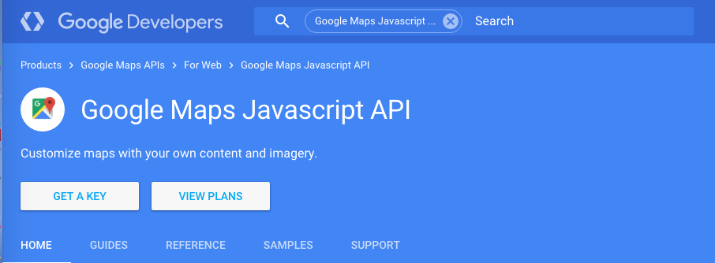

Primary documentation for the javascript API can be found at https://developers.google.com/maps/documentation/javascript/.
Google has a long standing position as the king of Internet Search; however, they do far more. One of the most commonly used features that Google offers is its maps service, found at Google Maps.
While the set up is fairly simple for the tech-savvy, one of the common complaints people have about Google, well anything, is that the documentation is written for their in-house or otherwise well-trained and tech-savvy people. The documentation is frequently excellent, but it is often dense and sometimes arcane to the unitiated.
This guide is going to cover some areas that will get you started, customizing, and creating maps in no time. The ability to simply create a map and stylize it are among some of the most useful, fun, and interesting features. They can also be quite frustrating, given the density of the reference material and can lead many neophyte users to give up in exasperation. This is what I will cover in this how-to. While it does not cover things like directions, geocoding, or other advanced features -- it focuses on getting the basics down and working with the aesthetics of the Google Maps API.
The aim of this how-to guide is to demonstrate some of the basic and more fun and useful functionalities of Google Maps API. It will show you how to set your account up and create your first maps without much difficulty, even if you have little to no experience coding. The documentation itself states that it is designed for people who are familiar, or at least comfortable, with Javascript and web development. This guide is written with the assumption you know a few basic things about setting up your own webpage and the bare bones of javascript -- like you understand what var is used for an what the fundamental structure of a function looks like.
If you don't, that's okay. Try to follow along, as I will break everything down as simply as humanly possible. The API itself is surprisingly deep, customizable, and complicated, and this how-to should get you on good footing to start exploring what is available through the Google Maps API.
To get started, click on Get A Key. If you ever need or want to upgrade your usage and data limits, you can come back and look at VIEW PLANS at any time, but that will likely be unnecessary for the purposes of this guide.
Click Continue
Create a new project. If you have not done so already, please sign up for a GMail account before continuing.
Getting signed up is probably the easiest part of the whole process. Once you are signed up, you will be given your API key, which should look something like a randomized string of letters and numbers like: ZBcdEFGH1jk2345LmnOPQR67sTUv8xyZAbc9De.
Once you create a project, you will come to the screen above and are ready to get going!